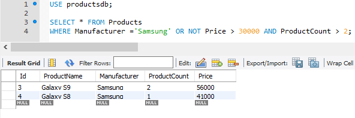
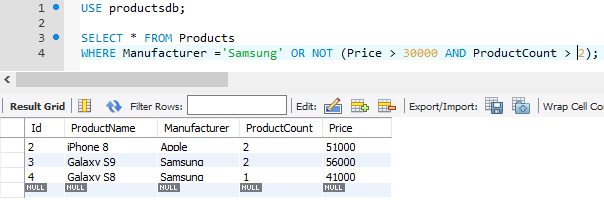

Фильтрация данных. Оператор WHERE
Зачастую необходимо извлекать не все данные из БД, а только те, которые соответствуют определенному условию. Для фильтрации данных в команде SELECT применяется оператор WHERE, после которого указывается условие:
1 | WHERE условие |
Если условие истинно, то строка попадает в результирующую выборку. В качестве можно использовать операции сравнения, которые сравнивают два выражения:
=: сравнение на равенство
!=: сравнение на равенство
<>: сравнение на неравенство
<: меньше чем
>: больше чем
<=: меньше чем или равно
>=: больше чем или равно
К примеру, выберем всех товары, производителем которых является компания Samsung:
1 2 | SELECT * FROM ProductsWHERE Manufacturer = 'Samsung'; |
Стоит отметить, что для MySQL не важен регистр символов, и, к примеру, строка "Samsung" будет эквивалентна строке "SAMSUNG" или "sumSunG".
Другой пример - найдем все товары, количество которых меньше 3:
1 2 | SELECT * FROM ProductsWHERE ProductCount < 3; |
Критерий фильтрации может представлять и более сложное составное выражение. Например, найдем все товары, у которых совокупная стоимость больше 100 000:
1 2 | SELECT * FROM ProductsWHERE Price * ProductCount > 100000; |
Логические операторы
Логические операторы позволяют объединить несколько условий. В MySQL можно использовать следующие логические операторы:
AND: операция логического И. Она объединяет два выражения:
1выражение1ANDвыражение2Только если оба этих выражения одновременно истинны, то и общее условие оператора AND также будет истинно. То есть если и первое условие истинно, и второе.
OR: операция логического ИЛИ. Она также объединяет два выражения:
1выражение1ORвыражение2Если хотя бы одно из этих выражений истинно, то общее условие оператора OR также будет истинно. То есть если или первое условие истинно, или второе.
NOT: операция логического отрицания. Если выражение в этой операции ложно, то общее условие истинно.
1NOTвыражение
Например, выберем все товары, у которых производитель Samsung и одновременно цена больше 50000:
1 2 | SELECT * FROM ProductsWHERE Manufacturer = 'Samsung' AND Price > 50000 |
Теперь изменим оператор на OR. То есть выберем все товары, у которых либо производитель Samsung, либо цена больше 50000:
1 2 | SELECT * FROM ProductsWHERE Manufacturer = 'Samsung' OR Price > 50000 |
Применение оператора NOT - выберем все товары, у которых производитель не Samsung:
1 2 | SELECT * FROM ProductsWHERE NOT Manufacturer = 'Samsung'; |
Приоритет операций
В одном условии при необходимости мы можем объединять несколько логических операций. Однако следует учитывать, что самой приоритетной операцией, которая выполняется в первую очередь, является NOT, менее приоритетная - AND и операция с наименьшим приоритетом - OR. Например:
1 2 | SELECT * FROM ProductsWHERE Manufacturer ='Samsung' OR NOT Price > 30000 AND ProductCount > 2; |
В данном случае сначала вычисляется выражение NOT Price > 30000, то есть цена должна быть меньше или равна 30000.
Затем вычисляется выражение NOT Price > 30000 AND ProductCount > 2, то есть цена должна быть меньше или равна 30000 и одновременно
количество товаров должно быть больше 2.
В конце вычисляется оператор OR - либо цена должна быть меньше или равна 30000 и одновременно количество товаров должно быть больше 2, либо производителем должен быть Samsung.
С помощью скобок можно переопределить приоритет операций:
1 2 | SELECT * FROM ProductsWHERE Manufacturer ='Samsung' OR NOT (Price > 30000 AND ProductCount > 2); |
В данном случае находим товары, у которых либо производитель Samsung, либо одновременно цена товара меньше или равна 30000 и количество товаров меньше 3.
